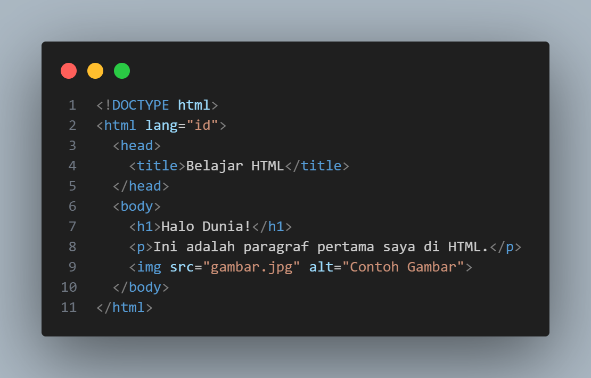
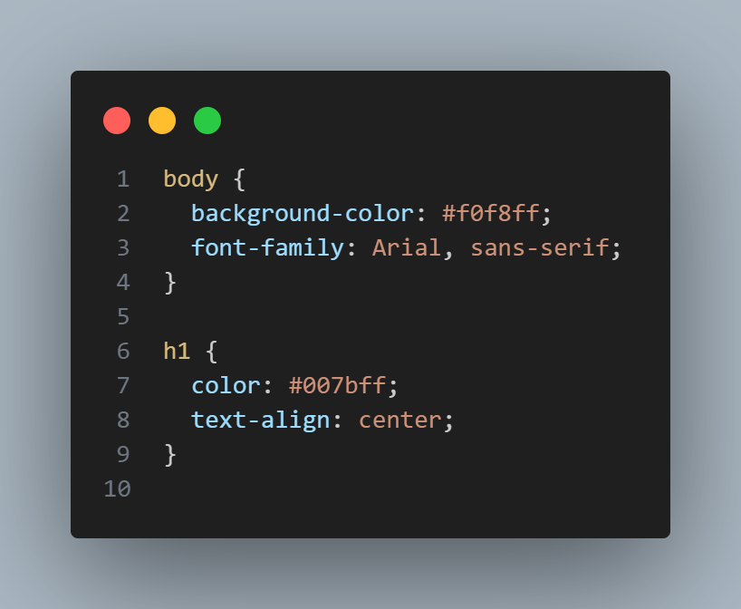
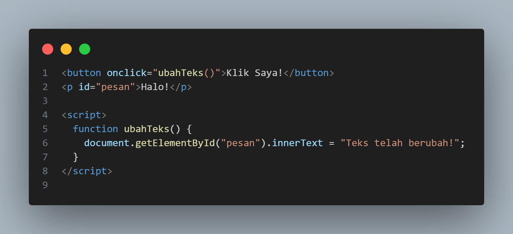
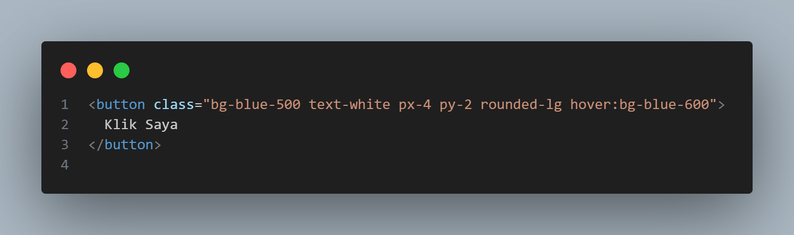
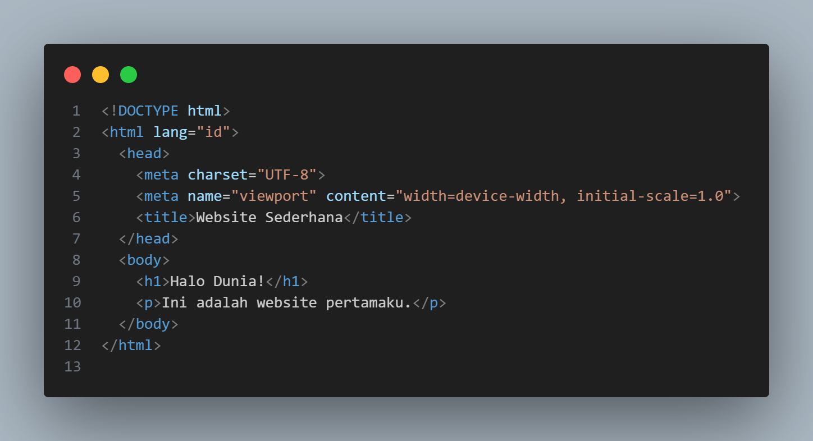
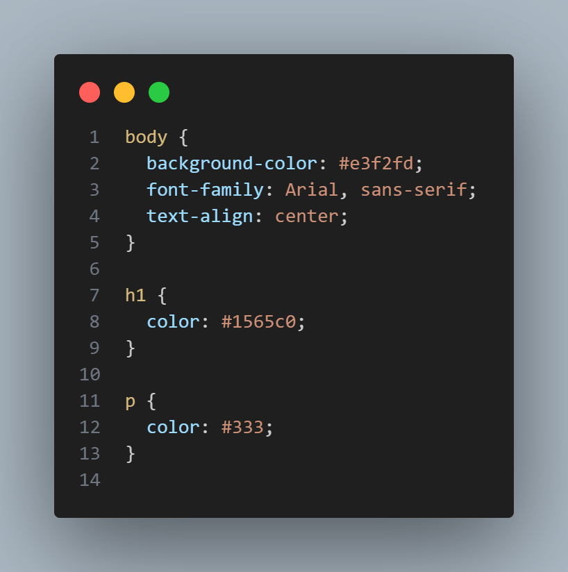
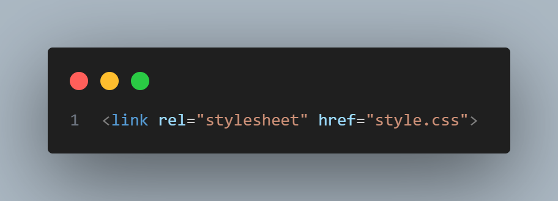
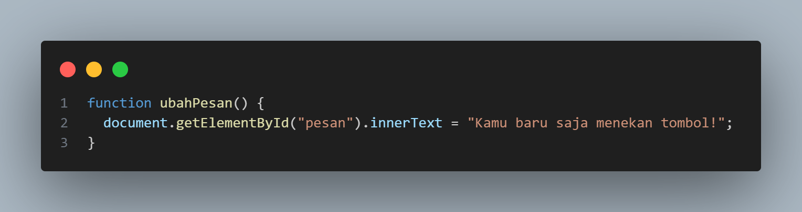
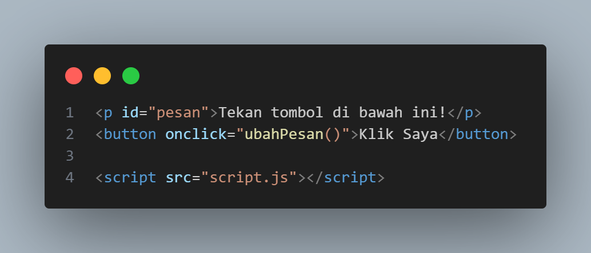

Motto Hidup:"Kesalahan adalah guru terbaik jika kamu mau belajar darinya."
Perkenalan Singkat
Halo! Kenalin aku Rio Johanes, biasa dipanggil Nengok, aku
mahasiswa S1 Ilmu Komputer st 24. Aku suka belajar hal baru terutama di
dunia teknologi dan desain web!
Jadwal Kuliah
Hari
Mata Kuliah
Jam
Ruang
Senin
Desain Interaksi
10:30 - 12:10
C-101
Selasa
IELTS Preparation
10:30 - 12:10
D-101
Rabu
Basis Data
10:30 - 13:00
D-106
Wirausaha Digital
13:50 - 15:30
D-101
Kamis
Struktur Data
08:00 - 10:30
D-105
Pemrograman Web
10:30 - 13:00
D-105
Kecerdasan Buatan
13:00 - 15:30
D-101
Mengenal HTML, CSS, JavaScript, dan Tailwind CSS
Dalam pembuatan website, ada empat komponen utama yang saling bekerja
sama untuk membentuk tampilan dan fungsionalitas halaman web.
🧱 1. HTML (HyperText Markup Language)
HTML (HyperText Markup Language) adalah bahasa dasar untuk
membuat halaman web.
HTML berfungsi untuk menyusun struktur dan isi dari halaman yang kamu
lihat di internet.
Bayangkan kamu ingin membangun sebuah rumah:
HTML adalah kerangka dan dindingnya — bentuk dasar bangunan.
✳️ Fungsi HTML:
Menentukan bagian-bagian halaman, seperti judul, paragraf, gambar, tabel, dan tautan.
Memberi arti pada isi halaman (disebut elemen semantik).
✳️ Contoh sederhana HTML:

📝 Penjelasan:
<h1> untuk membuat judul besar
<p> untuk membuat paragraf
<img> untuk menampilkan gambar
🎨 2. CSS (Cascading Style Sheets)
CSS (Cascading Style Sheets) adalah bahasa yang digunakan untuk mengatur tampilan dan gaya halaman web.
Kalau HTML adalah kerangka rumah, maka CSS adalah cat, dekorasi, dan perabotannya.
✳️ Fungsi CSS:
Mengubah warna, ukuran, jenis huruf, dan tata letak (layout) halaman.
Membuat website terlihat lebih indah dan rapi
✳️ Contoh CSS:

📝 Penjelasan:
background-color untuk mengubah warna latar belakang.
font-family untuk menentukan jenis huruf.
color dan text-align untuk mengatur warna serta posisi teks.
⚙️ 3. JavaScript
JavaScript (JS) adalah bahasa pemrograman untuk membuat halaman web menjadi hidup dan interaktif.
Kalau HTML adalah kerangka dan CSS adalah dekorasi, maka JavaScript adalah otak dan sarafnya.
✳️ Fungsi JavaScript:
Membuat elemen bisa berinteraksi (misalnya tombol yang bisa diklik).
Mengubah isi halaman secara otomatis atau dinamis tanpa harus memuat ulang.
Mengontrol logika dan perilaku website.
✳️ Contoh JavaScript:

📝 Penjelasan:
Saat tombol diklik, fungsi ubahTeks() dijalankan.
JavaScript mencari elemen dengan id pesan dan mengganti teksnya.
🌈 4. Tailwind CSS
Tailwind CSS adalah framework CSS modern yang membantu kamu membuat tampilan cantik dengan kelas-kelas siap pakai (utility classes).
Alih-alih menulis kode CSS panjang, kamu cukup menambahkan nama class ke elemen HTML.
✳️ Kelebihan Tailwind:
Cepat: tidak perlu menulis file CSS panjang.
Konsisten: gaya antar halaman seragam.
Responsif: mudah menyesuaikan tampilan di berbagai ukuran layar (HP, tablet, laptop).
✳️ Contoh Tailwind CSS:

📝 Penjelasan:
bg-blue-500 membuat warna latar biru
text-white memberi warna teks putih
px-4 py-2 memberi jarak dalam (padding)
rounded-lg membuat sudut membulat
hover:bg-blue-600 mengubah warna saat kursor diarahkan
💡 Kesimpulan:
Untuk membangun website, keempat komponen ini bekerja bersama:
HTML membuat struktur dasar halaman.
CSS mempercantik tampilan.
JavaScript menambahkan interaktivitas.
Tailwind CSS mempercepat pembuatan desain dengan class siap
pakai.
Tata Cara Membuat Website Sederhana
Membuat website tidak sesulit yang dibayangkan, lho!
Kamu tidak perlu langsung jago coding — cukup mulai dari hal dasar: HTML, CSS, dan JavaScript.
Ibarat membangun rumah, kamu akan mulai dari membangun rangka, mengecat dindingnya, lalu menambahkan kehidupan di dalamnya.
Berikut langkah-langkahnya 👇
🧱1. Siapkan Alat yang Dibutuhkan
Sebelum mulai, kamu perlu menyiapkan alat-alat kerja layaknya seorang pembangun web:
Text Editor → tempat kamu menulis kode, seperti Visual Studio Code (VS Code), Notepad++, atau Sublime Text.
Web Browser → alat untuk melihat hasil kerja kamu, seperti Google Chrome, Edge, atau Firefox.
📁2. Buat Folder Proyek Website
Di dalam folder ini kamu akan menyimpan semua file yang dibutuhkan website:
index.html → untuk struktur (isi halaman)
style.css → untuk tampilan
script.js → untuk interaksi
🧾3. Tulis Struktur Dasar HTML
HTML adalah tulang atau rangka dari website.
Kamu bisa menulis kode berikut di file index.html:

Setelah disimpan, klik dua kali file index.html, dan buka di browser.
🎨 4. Tambahkan CSS untuk Mempercantik Tampilan
Agar website tidak terlihat polos, tambahkan file bernama style.css di folder yang sama.
Isi dengan kode ini:

Lalu hubungkan ke HTML dengan menambahkan baris ini di bagian <head>:

Sekarang tampilan websitemu akan berubah jadi lebih berwarna dan rapi.
⚙️ 5. Tambahkan JavaScript untuk Interaktivitas
Supaya websitemu lebih hidup, tambahkan file script.js dengan isi berikut:

Lalu di dalam HTML tambahkan tombol dan teks:

Sekarang jika kamu klik tombolnya, teks di atasnya akan berubah — tandanya JavaScript sudah bekerja!.
🚀 6. Jalankan dan Uji Website
Buka index.html di browser.
Coba klik tombol yang dibuat dengan JavaScript tadi.
Ubah warna di CSS atau teks di HTML dan lihat hasilnya secara langsung.
☁️ 7. (Opsional) Unggah ke Internet
Kalau kamu ingin website-mu bisa dilihat semua orang, kamu bisa:
Gunakan GitHub Pages (gratis dan mudah untuk pemula).
Atau platform seperti Vercel.
Kesan dan Pesan Belajar Pemrograman Web
Belajar pemrograman web sangat menyenangkan karena kita bisa melihat
hasil kerja secara langsung di layar. Awalnya memang terasa sulit, tapi
setelah memahami struktur dan logikanya, membuat website menjadi hal
yang seru dan kreatif. Pesanku: jangan takut mencoba dan terus eksplor
ide-ide baru!